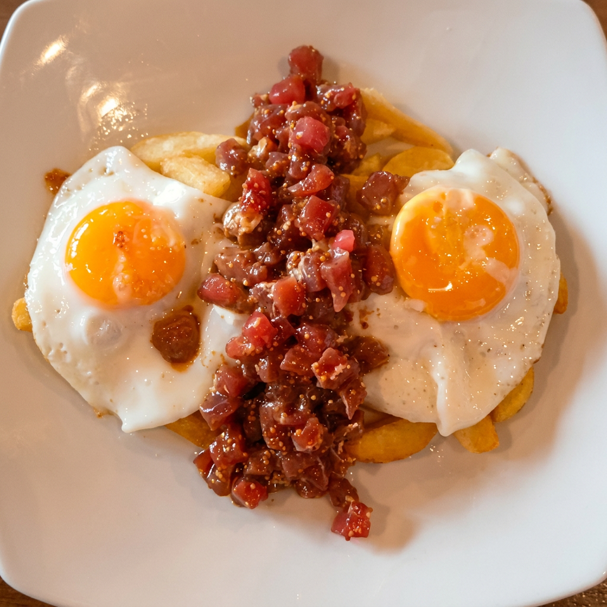
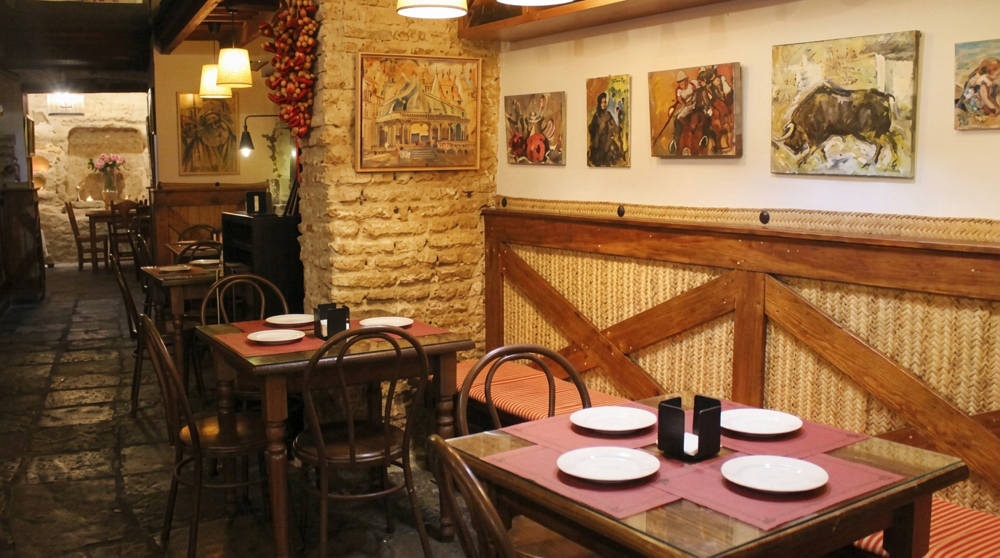
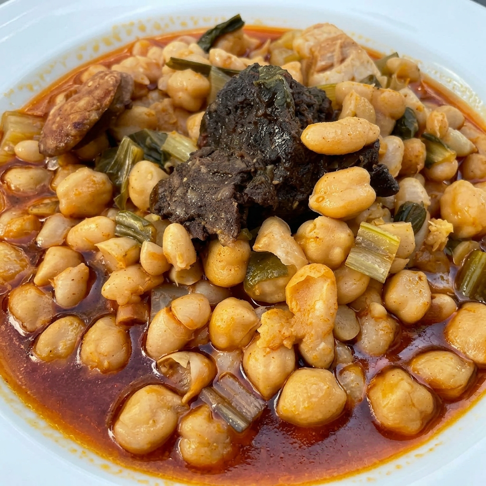
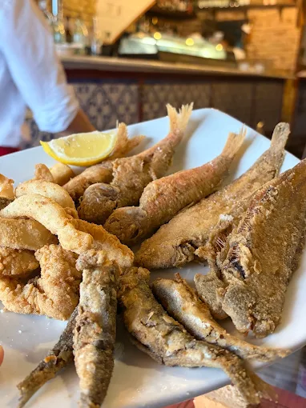
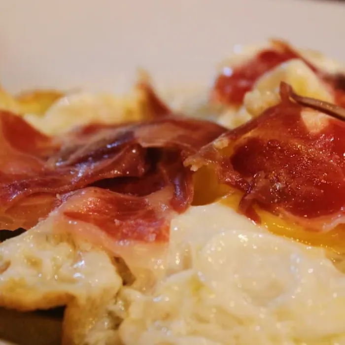
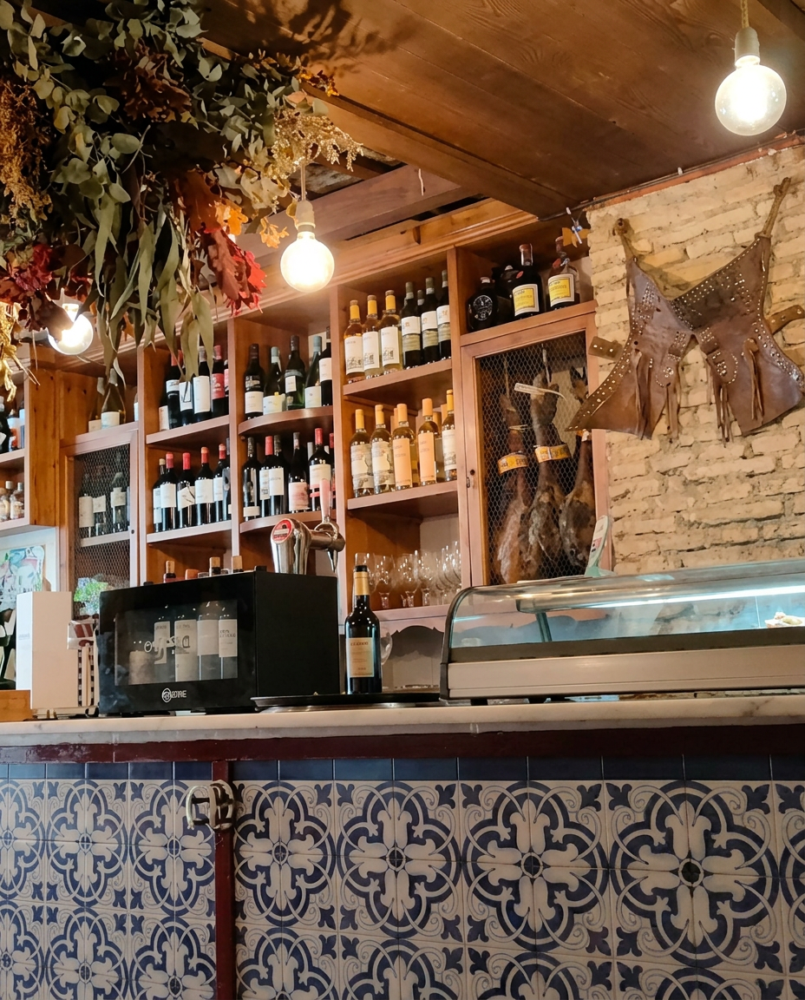
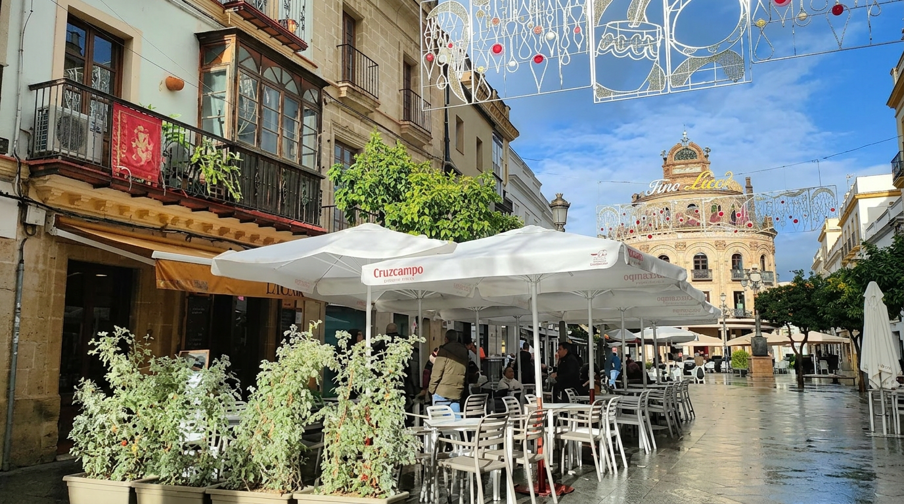

Huevos rotos Talabar
Tartar de atún rojo salvaje de almadraba Gadira con Patatas de Sanlúcar y Huevo.

Restaurante en el centro de Jerez de la Frontera · C/ Lancería 15 · Desde 2013
Tapas, guisos jerezanos al oloroso y vinos de Jerez en pleno centro histórico de Jerez de la Frontera. Cocina casera de producto, sin atajos, desde 2013.
La casa
En el corazón de Jerez, junto a la Plaza del Arenal y el Gallo Azul, Talabar es el restaurante donde comer cocina jerezana de verdad: berza jerezana, carrillada al oloroso, tortillita de camarones y pescaíto frito fresco de la Bahía de Cádiz. Todo acompañado de los mejores vinos de Jerez.
Una sala sobre la muralla almohade del siglo XII, en lo que fue la talabartería de la familia Duarte — proveedor oficial de la Casa Real de Alfonso XIII desde 1925 —, una barra de toda la vida y una terraza en el centro histórico de Jerez para ver pasar la ciudad.
"Buen lugar para tapear, tomar una cerveza bien fría."
De la cocina

Tartar de atún rojo salvaje de almadraba Gadira con Patatas de Sanlúcar y Huevo.

Garbanzos, col, carnes y embutido. Horas al fuego, sin atajos.

Fresco cada día de la Bahía de Cádiz. De la Plaza de Abastos a la mesa.

Patata de Sanlúcar, Jamón Ibérico y dos Huevos. El Antojo perfecto.

La bodega
Finos en rama, manzanilla, oloroso, amontillado, palo cortado y Pedro Ximénez. La bodega de la casa cuida cada copa para acompañar tu tapa.
Y al lado, una terraza al sol para una caña bien fría —junto al edificio del Gallo Azul.

Lo que dicen
"Cenar en Talabar es una experiencia que no quieres que termine. Hay que prescindir de la carta y dejarse aconsejar sobre lo que tienen del día. Interior precioso con una pared de la antigua muralla. No podéis dejar de ir."
Tripadvisor
Travellers' Choice ★
"La comida exquisita, el vino buenísimo y el trato insuperable. Lo recomiendo completamente, sobre todo la carrillada y los riñones al Jerez que están de diez. Un sitio que uno no se puede perder."
Fati Q.
Google ★★★★★
"Somos de San Sebastián y repetimos dos días seguidos. El local es muy agradable y el servicio impecable. Pepe se acordaba de nosotros y de lo que nos había recomendado para que probáramos más variedad. 100% recomendable."
Visitante de San Sebastián
Tripadvisor ★★★★★
"Comida espectacular, servicio de 10 y un ambiente excelente. Para repetir. Nos atendió Alejandro, un verdadero profesional de los que ya no quedan."
Luis Miguel A.
Google ★★★★★
"Estupendo restaurante con comida exquisita y variedad de bebidas, entre ellas olorosos y jereces de la zona. Lo mejor, el servicio atento, rápido y eficaz. Gracias por todo."
Cliente de Tripadvisor
Tripadvisor ★★★★★
"Authentic and welcoming. We came back evening after evening to drink sherry, eat ham and cheese and enjoy the atmosphere. Despite our short stay we were made to feel like regulars."
Visitante del Reino Unido
Tripadvisor ★★★★★
Visítanos
C. Lancería, 15 · 11402 Jerez de la Frontera · Cocina abierta todos los días de 13:00 a 00:00
Reservar mesa